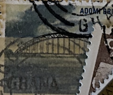
| SOURCE | TITLE| IMAGE MATCH | click to source page |
| eBay Australia | Australia 1982 - National Stamp Week First Day Covers set 8 | eBay Australia | 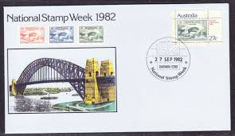 |
| eBay | First Day of Issue Cover Australian First Day Covers for sale | eBay | 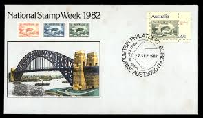 |
| Glen Stephens Stamps | Australia 2/6d "One Pound Jimmy" stamp, inverted watermark error found | 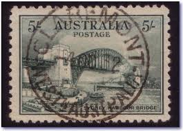 |
| Dreamstime.com | Sydney Harbour Bridge Australian Postage Stamp Editorial Photo - Image of australian, commemoration: 89464931 | 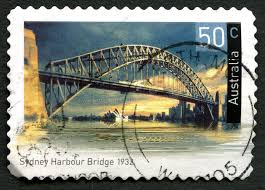 |
| Find Your Stamps Value | Value of australia 5 shilling harbour bridge stamps | 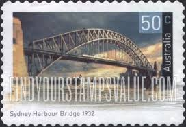 |
| eBay | Architecture Miniature Sheet Stamps for sale | eBay | 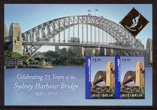 |
| iStock | Uk Forth Railway Bridge Postage Stamp Stock Photo - Download Image Now - Postage Stamp, Scotland, Black Background - iStock | 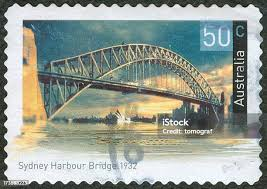 |
| Philip James Collectables | AUSTRALIA – 1932 Sydney Harbour Bridge 5/- 'GREEN' GU SG143 £200 [B0362] – Philip James Collectables | 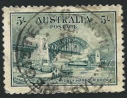 |
| Prospect Stamps and Coins | Australian :: Australian First Day Covers :: 1982 - 173 - Stamp Week 1982 - Australian First Day Cover - Stamps | 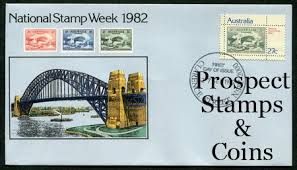 |
| SHOPOZZ | Купить sydney harbour bridge vintage metal bookmark souvenir (255647822388), США | 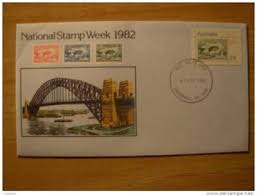 |
| eBay | Australian Stamp Individuals for sale | eBay | 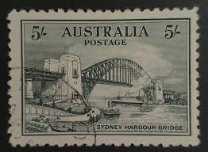 |
| Stamp Auction Network | Prices Realized | 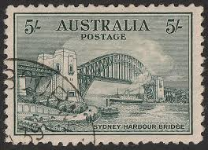 |
| telegramsaustralia.com | Punctures in stamps | 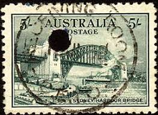 |
| eBay | Mint Hinged Architecture Australian Stamps for sale | eBay | 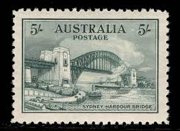 |
| PicClick UK | FIRST DAY UK National Lottery Ticket issued Sat 19. 11.94 Ex Condition ebay uk £49.99 - PicClick UK | 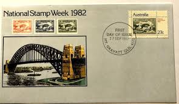 |
| eBay | 1982 National Stamp Week FDC - National Stamp Week 82 Melbourne 3000 PMK | eBay Australia | 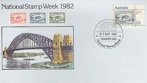 |
| iStampGallery | Landmark Bridges of India - iStampGallery | 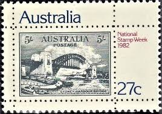 |
| Otway & Orford | S.S. Orford, a ship that launched a thousand pocket squares – Otway & Orford | 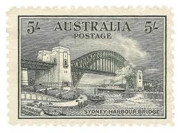 |
| Sydney Philatelics, Australia | KGV Other Issues & KGVI Stamps - Sydney Philatelics Australia | 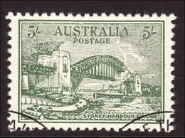 |
| eBay | AUSTRALIA 1982 STAMP WEEK STAMP ON STAMP FDC * STAMPS ON STAMPS -18594 | eBay | 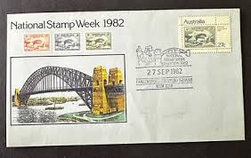 |
| Find Your Stamps Value | Wert von australia sydney harbour bridge Briefmarken | 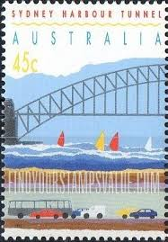 |
| eBay UK | C2) Australia 1935 WASP Airlines Vignette sheet 6, 2007 reprinted version | eBay UK | 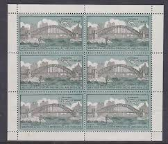 |
| Shutterstock | 50 Cent Australia: Over 253 Royalty-Free Licensable Stock Photos | Shutterstock | 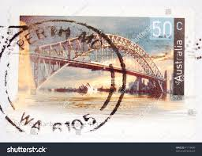 |
| eBay | New South Wales vintage trade card showing a postage stamp & Sydney Bridge | eBay | 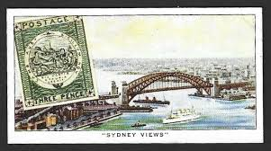 |
| HipStamp | Australia 1982 27c National Stamp Week SG864 Fine Used 3 | Australia & Oceania - Australia, General Issue Stamp / HipStamp | 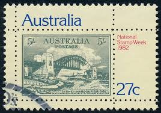 |
| Shields Stamps & Coins | Australia SG 143 5/- Sydney Harbour Bridge Stamp Very Fine Used – Shields Stamps & Coins | 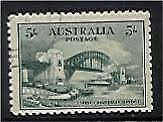 |
| Leski Auctions | ORIGINAL ARTWORK: Official photographic reduction to 200% stamp-size of Frank Manley's original artwork for the | 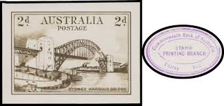 |
| Gumtree Australia | national stamp week | Antiques, Art & Collectables | Gumtree Australia Local Classifieds | 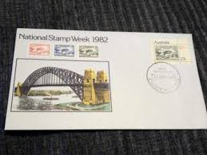 |
| PicClick AU | AUSTRALIA 1992 OPENING Sydney Harbour Tunnel Official Antique gold finish Medal $12.99 - PicClick AU | 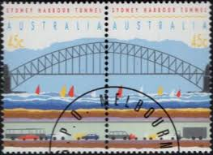 |
| Flickr | Untitled | Postcrossing | Flickr | 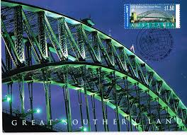 |
| earsathome.com | Miniature Sheets | 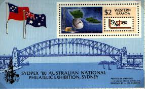 |
| eBay UK | Cigarette Card : Ardath : Stamps Rare & Interesting (1939) : Individual Cards | eBay UK | 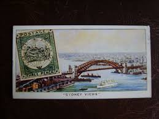 |
| eBay | AUSTRALIA 1982 NATIONAL STAMP WEEK FDC (x10) (ID:111/D54953) | eBay | 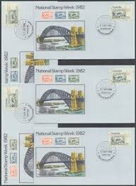 |
| Postage Stamp Guide | Bridges | Canada Stamp Series | 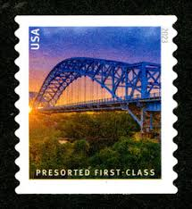 |
| Find Your Stamps Value | Historic Bridges: Birkenhead Bridge, Adelaide, 1940 50c Multicolored stamp price, value | 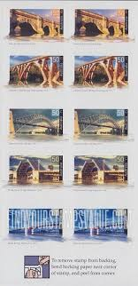 |
| Alamy | Sydney Harbour Bridge 1932 Stock Photo - Alamy | 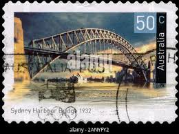 |
| Kennedy Stamps Pty. Ltd. | Pre Decimals - Kennedy Stamps Pty. Ltd. | 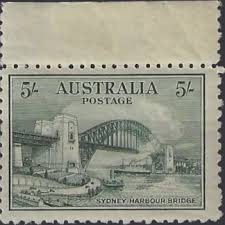 |
| eBay | Portugal 1952 #757-60 Cent. of the Foundation of Ministry of Public Works - Used | eBay | 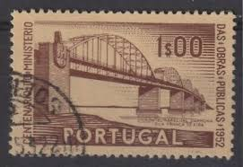 |
| Blogger.com | Commonwealth Stamps Opinion: 1863. 🇯🇪 Jersey Post To Participate In Devoted To Your Service Omnibus. | 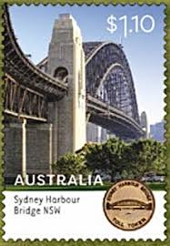 |
| eBay | National Stamp Week 1982-First Day Cover- FDC 1982-[L203]-Australia Stamp | eBay Australia | 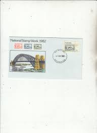 |
| Leski Auctions | Stamps, Coins and Postal History | 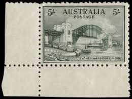 |
| eBay | 1992 Australia Sc #1296 Opening of the Sydney Harbour Tunnel | eBay | 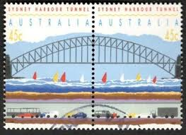 |
| eBay | Architecture Samoan Stamps (1962-Now) for sale | eBay | 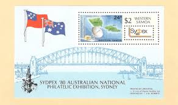 |
| eBay | Samoa, Sc #538, MNH, 1980, S/S, Bridge, Space, Maps | eBay | 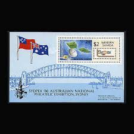 |
| ebid.net | POLAND 1952, 60th Birthday of Boleslaw Bierut, 45+15 G, Red, USED - Full Gum on eBid United Kingdom | 207757463 | 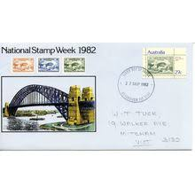 |
| PicClick AU | 1981 CENTENARY OF Pharmaceutical Education in Australia PSE FDI $1.00 - PicClick AU | 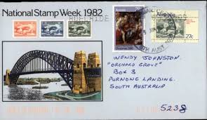 |
| eBay | Australia PNC 2007 Sydney Harbour Bridge Celebrating 75 years | eBay | 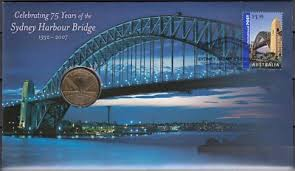 |
| HipStamp | Sweden #496 used | Europe - Sweden, General Issue Stamp / HipStamp |  |
| eBay | Australia 1992 Sydney Harbor Tunnel pair Sc# 1296 NH | eBay | 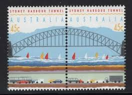 |
| eBay | US 5808-5811 Bridges presorted first-class 25c coil single set 4 MNH 2023 | eBay | 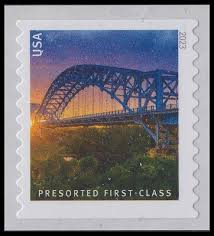 |
| stampsonstamps.org | Stamps on Stamps | |
| Australian Stamp Catalogue | http://www.australianstrampcatalogue.com | |
| Gumtree Australia | sydney harbour bridge coin | Collectables | Gumtree Australia Local Classifieds | |
| OLX Ukraine | лот - купити антикваріат Тернопільська область - Ціна на OLX.ua | |
| Carter's Price Guide to Antiques | Rare 1932 Australian Green Harbour Bridge Stamps (Strip of 4) - Stamps - Numismatics, Stamps & Scrip | |
| eBay | Australia Stamp Set Scott # 2219b-2224 Unused..Free International Shipping! | eBay | |
| eBay | Jugoslavia 1948 Scott# 239-42 Canceled | eBay | |
| eBay | 2007 $1.95 'Sydney Harbour Bridge' 2 Koala Reprint Right Selvedge Stamp: MUH | eBay | |
| eBay | Australia. Scott's #s 1992. MNH. Sydney Harbor Tunnel. sal's stamp store. | eBay |